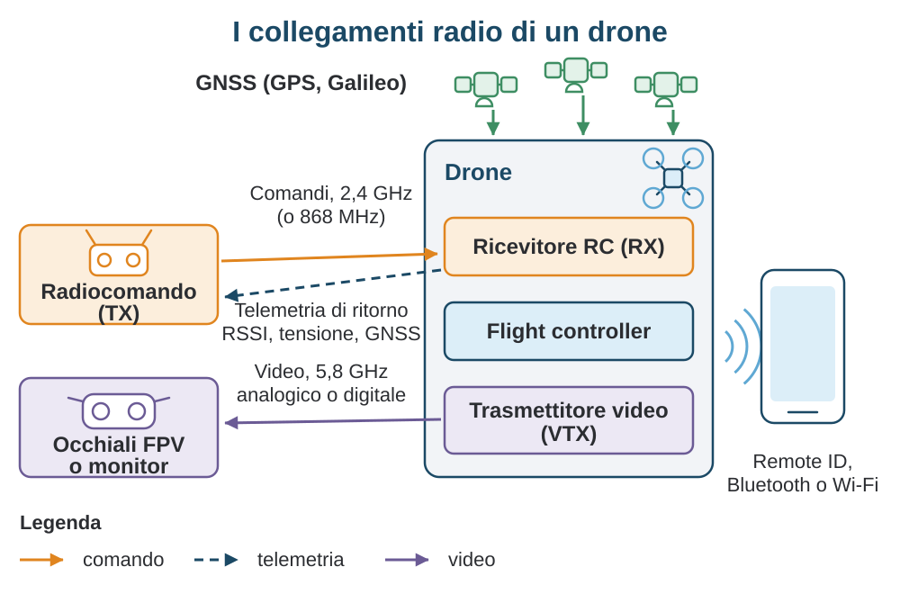
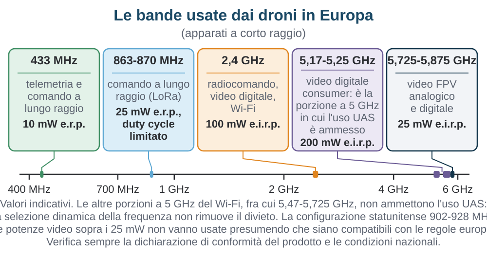

Radio, video e telemetria
Un drone è un sistema radio con le eliche. Tra te e la macchina corrono almeno tre collegamenti, comandi, video e telemetria, più i segnali dei satelliti che scendono e il Remote ID che sale verso chiunque voglia ascoltarlo. Questo è il capitolo in cui giochi in casa: parleremo di bande, potenze, protocolli e latenze, e di come le regole europee sullo spettro decidono cosa puoi comprare e usare.
- Tre collegamenti e due segnali
- Lo spettro disponibile in Europa
- Il link di comando
- Il link video
- Telemetria e protocolli
- Il posizionamento satellitare
- Il Remote ID visto dal lato radio
- Interferenze e coesistenza
Fonti tecniche e normative verificate il 20 settembre 2026.
3.1 Tre collegamenti e due segnali
Lo schema della Figura 3.1 mostra tutto ciò che viaggia via radio in un volo tipico. Il link di comando porta i tuoi stick al flight controller, decine o centinaia di volte al secondo: è il collegamento che non può cadere, e infatti tutta la sua progettazione ruota intorno alla robustezza. Il link video porta l'immagine della camera ai tuoi occhi, su uno schermo o negli occhiali: è quello che consuma più banda e tollera meglio un'interruzione. La telemetria torna indietro dal drone: tensione della batteria, posizione, quota, qualità del link stesso. Nei sistemi integrati dei droni consumer i tre collegamenti condividono un unico link digitale bidirezionale; nel mondo FPV sono spesso tre sistemi separati, ciascuno con la sua banda e la sua antenna.
A questi si aggiungono due segnali che non controlli. I segnali GNSS scendono dai satelliti e danno al drone posizione e velocità. Il Remote ID parte dal drone e annuncia in chiaro chi sei e dove sei, a chiunque abbia uno smartphone a portata (sezione 3.7).

3.2 Lo spettro disponibile in Europa
Un drone hobbistico non ha una licenza di frequenza: usa le bande destinate agli apparati a corto raggio (SRD) e alle reti locali senza fili, con i limiti di potenza fissati dalle norme armonizzate ETSI e dalla Raccomandazione ERC 70-03. Sono limiti bassi, pensati per far convivere milioni di dispositivi, e valgono in tutta l'Unione; l'Italia li recepisce nel Piano Nazionale di Ripartizione delle Frequenze. La Figura 3.2 e la Tabella 3.1 li riassumono.

| Banda | Uso tipico | Limite in Europa | Norma |
|---|---|---|---|
| 433 MHz | Telemetria a lungo raggio | 10 mW e.r.p. con duty cycle ≤ 10%, oppure 1 mW senza limite | ERC 70-03, EN 300 220 |
| 863-870 MHz | Comando a lungo raggio (LoRa) | 25 mW e.r.p. nelle sottobande principali con duty cycle 0,1-1%; 500 mW e.r.p. al 10% solo in 869,4-869,65 MHz | ERC 70-03, EN 300 220 |
| 2,4 GHz | Radiocomando, video digitale, Wi-Fi | 100 mW e.i.r.p. | EN 300 328 |
| 5,17-5,25 GHz | Comando e video dei droni (banda dedicata dal 2022) | 200 mW e.i.r.p. | Decisione (UE) 2022/179 |
| 5,15-5,35 / 5,47-5,725 GHz | Wi-Fi 5 GHz | 200 mW solo al chiuso / 1 W con DFS | EN 301 893 |
| 5,725-5,875 GHz | Video FPV analogico e digitale | 25 mW e.i.r.p. | EN 300 440 |
Due confronti spiegano molte cose che leggerai nei forum. Negli Stati Uniti la banda dei 900 MHz va da 902 a 928 MHz con potenze fino a 1 W: in Europa quella banda non esiste per gli SRD, e l'equivalente sono i 868 MHz con 25 mW e vincoli di duty cycle. Un modulo «915» acceso in Italia trasmette fuori banda. Sui 5,8 GHz la FCC ammette potenze dell'ordine del watt; in Europa il limite è 25 mW. Un trasmettitore video da 600 mW, comunissimo nei prodotti per il mercato americano, supera il limite europeo di oltre venti volte, qualunque sia l'etichetta sulla scatola.
La direttiva RED e la marcatura CE
Ogni apparato radio venduto in Europa, drone e radiocomando compresi, deve rispettare la direttiva 2014/53/UE, la RED: uso efficiente dello spettro, compatibilità elettromagnetica, sicurezza. Il costruttore la dimostra applicando le norme armonizzate viste sopra, appone la marcatura CE e firma una dichiarazione di conformità. È una filiera distinta da quella della marcatura di classe C0-C6 del capitolo 4, che riguarda la sicurezza del volo: un drone di classe C1 ha entrambe. Chi importa un apparato da fuori Europa, anche per uso personale, ne diventa responsabile: un prodotto non conforme può essere fermato in dogana e il suo uso, oltre a interferire con altri servizi, espone a sanzioni.
3.3 Il link di comando
Il link di comando moderno è un sistema digitale a pacchetti su 2,4 GHz o 868 MHz. Il radiocomando campiona gli stick, li impacchetta e trasmette con frequency hopping: trasmettitore e ricevitore saltano su decine di canali secondo una sequenza pseudocasuale condivisa al momento del binding, così che un'interferenza su un canale costi un pacchetto e non il collegamento. Il ricevitore risponde con pacchetti di telemetria sullo stesso link. Il packet rate, da 50 a 1000 Hz, fissa la latenza e, in senso opposto, la portata: a parità di potenza, pacchetti più frequenti significano meno energia per bit e sensibilità peggiore.
Il pilota legge la salute del link con due indicatori. Il RSSI è la potenza ricevuta in dBm; la link quality è la percentuale di pacchetti arrivati integri in una finestra recente, ed è spesso più informativa perché misura ciò che conta davvero. Quando i pacchetti validi mancano per più di una soglia, il ricevitore dichiara il failsafe e il flight controller esegue il comportamento configurato: tenere l'ultimo comando per un istante, poi tornare a casa o atterrare (capitolo 7).
Tra i sistemi aperti, ExpressLRS usa i modem LoRa e FLRC di Semtech su 2,4 GHz e su 868 MHz, con packet rate fino a 1000 Hz e latenze di pochi millisecondi alle frequenze più alte; la comunità riporta portate di decine di chilometri in condizioni ideali con i soli 100 mW ammessi. Crossfire, su 868 MHz, lavora a 50 o 150 Hz e ha reso popolare il protocollo seriale CRSF (sezione 3.5). I droni consumer integrati usano invece link proprietari che saltano tra 2,4 e 5,8 GHz, e dal 2022 anche sulla banda dedicata 5,17-5,25 GHz, scegliendo la banda meno disturbata istante per istante.
3.4 Il link video
Il video ha due filosofie. Il video analogico sui 5,8 GHz trasmette il segnale della camera in modulazione di frequenza, senza compressione: 40 canali tra 5,6 e 5,9 GHz, di cui la banda «Raceband» con otto canali distanziati di 37 MHz per far volare insieme più piloti. La latenza è praticamente nulla e il degrado è graduale: più il segnale è debole, più l'immagine si riempie di neve, ma resta leggibile fino all'ultimo. Per questo il volo acrobatico e le gare lo hanno usato per anni. Il prezzo è la qualità: definizione standard, colori sbiaditi, disturbi.
Il video digitale comprime il flusso della camera e lo trasmette a pacchetti, su 5,8 GHz o su più bande. La qualità è quella di un video HD, con latenze tipiche tra 15 e 35 ms a seconda del sistema, della risoluzione e della complessità della scena. In cambio compare l'effetto cliff: il segnale è perfetto fino a una soglia e poi si blocca o sparisce di colpo, senza la degradazione progressiva dell'analogico. I sistemi migliori attenuano il problema riducendo risoluzione e bit rate quando il link peggiora. I droni giocattolo, infine, spediscono il video su Wi-Fi verso l'app del telefono, con latenze che arrivano al secondo e portate di poche decine di metri: sufficienti per guardare, inadatte per pilotare.
| Caratteristica | Analogico 5,8 GHz | Digitale | Wi-Fi (giocattoli) |
|---|---|---|---|
| Latenza | Sotto il millisecondo | 15-35 ms | Fino a 1 s |
| Qualità | Definizione standard, disturbi | HD | Variabile |
| Comportamento al limite | Degrado graduale | Effetto cliff | Blocco |
| Banda occupata | Canale FM largo | Pacchetti compressi | Wi-Fi standard |
| Uso tipico | Gare, freestyle | Consumer, FPV cinematico | Giocattoli |
3.5 Telemetria e protocolli
Dentro il drone i dati viaggiano su protocolli seriali. CRSF, nato per Crossfire e adottato da ExpressLRS, trasporta comandi e telemetria su un solo UART a circa 400 kbaud, bidirezionale; è lo standard di fatto del mondo FPV. S.Port è il protocollo di telemetria a bus di un altro grande produttore di radiocomandi, in cui il ricevitore interroga a turno i sensori collegati. Sui droni autonomi domina MAVLink, un protocollo di messaggistica leggero con centinaia di messaggi standard: ogni pacchetto porta identificativo di sistema e di componente, numero di sequenza e checksum, e trasporta telemetria, parametri, missioni a waypoint e comandi. È il linguaggio con cui i firmware ArduPilot e PX4 parlano con la stazione di controllo a terra, il software su PC o tablet, come QGroundControl o Mission Planner, con cui pianifichi le missioni e osservi il volo.
Per il pilota della categoria Open la telemetria che conta si riduce a pochi valori, che il radiocomando o l'app mostrano in continuazione: tensione della batteria per cella, qualità del link, numero di satelliti, distanza e quota rispetto al punto di decollo. Impara a guardarli come guardi il cruscotto di un'auto.
3.6 Il posizionamento satellitare
Il ricevitore GNSS di un drone moderno traccia più costellazioni insieme: GPS, Galileo, GLONASS e BeiDou. Più satelliti in vista significano geometria migliore e fix più robusto. La precisione di un ricevitore autonomo è di alcuni metri, e i ricevitori multibanda, che ascoltano due frequenze per costellazione, riducono gli errori ionosferici e accelerano il fix. Per il rilievo di precisione si passa a RTK e PPK: correzioni da una stazione base, in tempo reale o in post-elaborazione, che portano la precisione al centimetro. Al volo hobbistico non servono.
Il GNSS è la base di tutto ciò che il drone fa da solo: tenere la posizione, tornare a casa, seguire una rotta. Ecco perché il flight controller rifiuta di armare in modalità posizione finché non ha un fix con un numero minimo di satelliti, tipicamente sei, e perché i manuali consigliano di attendere che siano dieci o più. Due fenomeni lo disturbano. Il multipath, le riflessioni su edifici e superfici metalliche, che in città degradano la posizione anche di decine di metri. E l'attività geomagnetica, misurata dall'indice Kp: con Kp pari o superiore a 4 o 5 la ionosfera disturba i segnali e il fix diventa instabile. Le app meteo per droni mostrano il Kp per questo motivo.
3.7 Il Remote ID visto dal lato radio
Il Remote ID diretto, obbligatorio sulle classi C1, C2 e C3 e in categoria Specific (capitolo 4), è un trasmettitore broadcast che usa tecnologie che hai già in tasca. Lo standard europeo EN 4709-002 di ASD-STAN prevede quattro trasporti: advertising Bluetooth 4 (legacy), Bluetooth 5 Long Range, beacon Wi-Fi e Wi-Fi NAN. Il drone deve implementarne almeno alcuni, e uno smartphone con un'app gratuita li riceve tutti senza associarsi al drone: è un annuncio, non una connessione. La portata è quella del Bluetooth e del Wi-Fi, centinaia di metri in campo aperto.
Il messaggio, aggiornato circa una volta al secondo, contiene il numero di registrazione dell'operatore, il numero di serie del drone in formato ANSI/CTA-2063-A, la marca temporale, posizione e altezza del drone, rotta e velocità al suolo, e la posizione del pilota o, in mancanza, del punto di decollo. È una targa che parla. Dal lato del pilota comporta due obblighi pratici: inserire il numero di operatore nel drone prima del primo volo, e non spegnere o schermare il trasmettitore. Per i droni senza marcatura usati in categoria Specific esistono moduli aggiuntivi autonomi, con GNSS e batteria propri, che fanno lo stesso lavoro.
3.8 Interferenze e coesistenza
La banda dei 2,4 GHz è la più affollata dello spettro: Wi-Fi, Bluetooth, radiocomandi, video digitale, forni a microonde. In città, in un raduno di piloti o vicino a un evento con molte persone e telefoni, il rumore di fondo sale e la portata utile scende, a volte drasticamente. Il frequency hopping e la selezione adattiva dei canali mitigano ma non eliminano il problema; i link su 868 MHz soffrono meno l'affollamento e penetrano meglio gli ostacoli, a costo di antenne più grandi e bit rate più bassi.
Le strutture metalliche, tralicci, capannoni, ponti, gru, fanno due cose: schermano il segnale e lo riflettono, creando multipath sia sul link di comando sia sul GNSS. Volare dietro un edificio rispetto a te significa perdere la linea di vista radio prima di quella ottica. Le antenne contano: le antenne a polarizzazione circolare del video FPV tollerano meglio le riflessioni, e l'orientamento del radiocomando rispetto al drone cambia il guadagno di parecchi dB. Il consiglio pratico che discende da tutto questo è uno: vola dove vedi il drone senza ostacoli in mezzo, e tratta ogni calo della link quality come un invito a tornare indietro.
Quando il link cade davvero, il sistema è progettato per cavarsela da solo: il failsafe attiva il ritorno automatico al punto di home, guidato dal GNSS, e il video torna appena il drone rientra a portata. La regola per il pilota è non spegnere il radiocomando e non correre: il capitolo 7 descrive la procedura passo per passo.
In sintesi
- Tre collegamenti radio: comando (robustezza), video (banda), telemetria (di ritorno); più il GNSS in discesa e il Remote ID in salita.
- In Europa i droni usano le bande per apparati a corto raggio: 100 mW sui 2,4 GHz, 25 mW sui 5,8 GHz, 25 mW sugli 868 MHz con duty cycle, 200 mW sulla banda dedicata 5,17-5,25 GHz. I 915 MHz e i trasmettitori video da centinaia di milliwatt non sono ammessi.
- Drone e radiocomando devono rispettare la direttiva RED e portare la marcatura CE, oltre alla marcatura di classe.
- Il link di comando salta di frequenza, misura RSSI e link quality e attiva il failsafe quando i pacchetti mancano.
- Video analogico: latenza nulla, degrado graduale, bassa qualità. Video digitale: HD, 15-35 ms, effetto cliff.
- La portata dichiarata è misurata in condizioni ideali e spesso in modalità FCC; in Open conta solo la distanza a cui vedi il drone.
- GNSS multicostellazione: aspetta il fix e almeno una decina di satelliti prima di decollare; attenzione a multipath e indice Kp.
- Il Remote ID trasmette via Bluetooth e Wi-Fi identità e posizione del drone e del pilota, leggibili da chiunque.
3.9 Fonti
- ETSI EN 300 328 (2,4 GHz), EN 300 440 (5,725-5,875 GHz), EN 301 893 (5 GHz RLAN), EN 300 220 (25-1000 MHz): etsi.org/standards
- CEPT/ERC Recommendation 70-03, Annex 1, apparati a corto raggio non specifici: docdb.cept.org/download/4635
- Direttiva 2014/53/UE (RED): eur-lex.europa.eu/eli/dir/2014/53
- Piano Nazionale di Ripartizione delle Frequenze (MIMIT), aggiornamento 2022: mimit.gov.it, PNRF
- Regolamento delegato (UE) 2019/945, Allegato, requisiti del sistema di identificazione a distanza diretta: eur-lex.europa.eu/eli/reg_del/2019/945
- ASD-STAN, introduzione allo standard europeo di Remote ID EN 4709-002: asd-stan.org
- Documentazione ExpressLRS (expresslrs.org), MAVLink (mavlink.io), ArduPilot (ardupilot.org), PX4 (docs.px4.io)
- IATA, viaggiare con batterie al litio: iata.org, batteries